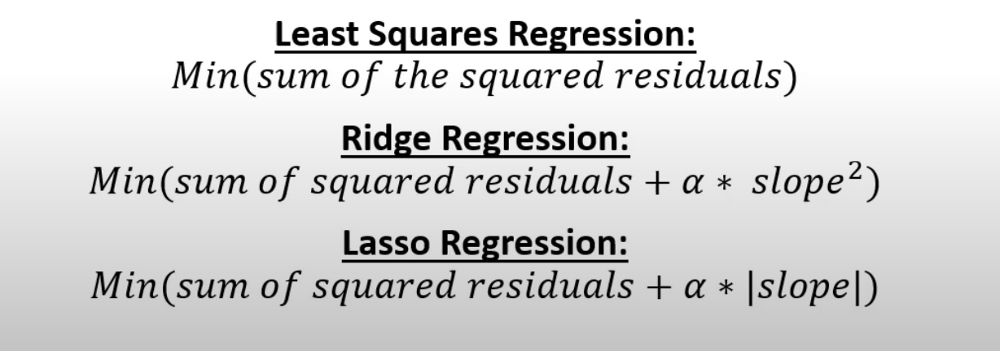

- using Recipe.
- add resamples to estimate the performance of our two models
- add workflow with tunning
- add quick tunning
load package
Load Pacakges & Set Options
library(themis)
library(tidyverse)
library(tidymodels)
library(palmerpenguins) # penguin dataset
library(gt) # better tables
library(bonsai) # tree-based models
library(conflicted) # function conflicts
library(vetiver)
library(Microsoft365R)
library(pins)
tidymodels_prefer() # handle conflicts
conflict_prefer("penguins", "palmerpenguins")
options(tidymodels.dark = TRUE) # dark mode
theme_set(theme_bw()) # set default ggplot2 theme
data preparation
read data
Code
library(tidyverse)
train = read_csv("data/train.csv")
test=read_csv("data/test.csv")
data split
Prepare & Split Data
train_df <- train %>% select_if(is.numeric)%>% rename(target_variable=SalePrice)%>% replace(is.na(.), 0)
Code
set.seed(1234)
data_split <- initial_validation_split(data=train_df, prop = c(0.7,0.1))
data_train=training(data_split)
data_test=testing(data_split)
data_valid=validation(data_split)
modeling
recipe
Code
data_rec <- recipe(target_variable ~ ., data = data_train) %>%
#step_downsample(target_variable) %>%
step_dummy(all_nominal(), -all_outcomes()) %>%
step_zv(all_numeric()) %>%
step_normalize(all_numeric(),-all_outcomes())
model

lasso regression
Code
lasso_tune_spec <- linear_reg(penalty = tune(), mixture = 1) %>%
set_engine("glmnet")
Code
lasso_grid <- grid_regular(penalty(), levels = 50)
Code
Linear Regression Model Specification (regression)
Main Arguments:
penalty = tune()
mixture = 1
Computational engine: glmnet
workflow
Code
model_workflow =
workflow() %>%
add_model(lasso_tune_spec) %>%
add_recipe(data_rec)
using control_race instead of control_grid
Code
library(finetune)
cntl <- control_race(save_pred = TRUE,
save_workflow = TRUE)
10 fold for tunning
Code
set.seed(234)
folds <- vfold_cv(data_train)
training
train lasso model
using tune_race_anova() instead of tune_grid()
Code
library(finetune)
doParallel::registerDoParallel()
lasso_res = model_workflow %>%
tune_race_anova(
resamples = folds,
grid = lasso_grid,
control = cntl
)
Code
lasso_res %>% collect_metrics()
# A tibble: 100 × 7
penalty .metric .estimator mean n std_err .config
<dbl> <chr> <chr> <dbl> <int> <dbl> <chr>
1 1 e-10 rmse standard 38785. 10 5169. Preprocessor1_Model01
2 1 e-10 rsq standard 0.777 10 0.0433 Preprocessor1_Model01
3 1.60e-10 rmse standard 38785. 10 5169. Preprocessor1_Model02
4 1.60e-10 rsq standard 0.777 10 0.0433 Preprocessor1_Model02
5 2.56e-10 rmse standard 38785. 10 5169. Preprocessor1_Model03
6 2.56e-10 rsq standard 0.777 10 0.0433 Preprocessor1_Model03
7 4.09e-10 rmse standard 38785. 10 5169. Preprocessor1_Model04
8 4.09e-10 rsq standard 0.777 10 0.0433 Preprocessor1_Model04
9 6.55e-10 rmse standard 38785. 10 5169. Preprocessor1_Model05
10 6.55e-10 rsq standard 0.777 10 0.0433 Preprocessor1_Model05
# ℹ 90 more rows
model result
Evaluate
Code
Rows: 10
Columns: 6
$ splits <list> [<vfold_split[919 x 102 x 1021 x 38]>], [<vfold_split[91…
$ id <chr> "Fold02", "Fold05", "Fold10", "Fold09", "Fold03", "Fold04…
$ .order <int> 3, 2, 1, 4, 5, 6, 7, 8, 9, 10
$ .metrics <list> [<tbl_df[100 x 5]>], [<tbl_df[100 x 5]>], [<tbl_df[100 x …
$ .notes <list> [<tbl_df[0 x 3]>], [<tbl_df[0 x 3]>], [<tbl_df[0 x 3]>],…
$ .predictions <list> [<tbl_df[5100 x 5]>], [<tbl_df[5100 x 5]>], [<tbl_df[510…
Code
lasso_res %>% plot_race()
use best tune model for final fit
Code
lowest_rmse <- lasso_res %>%
select_best("rmse", maximize = FALSE)
lowest_rmse
# A tibble: 1 × 2
penalty .config
<dbl> <chr>
1 0.0000000001 Preprocessor1_Model01
Code
final_wf <-
model_workflow %>%
finalize_workflow(lowest_rmse)
final_wf
══ Workflow ════════════════════════════════════════════════════════════════════
Preprocessor: Recipe
Model: linear_reg()
── Preprocessor ────────────────────────────────────────────────────────────────
3 Recipe Steps
• step_dummy()
• step_zv()
• step_normalize()
── Model ───────────────────────────────────────────────────────────────────────
Linear Regression Model Specification (regression)
Main Arguments:
penalty = 1e-10
mixture = 1
Computational engine: glmnet
last fit
Code
final_res <-
final_wf %>%
last_fit(data_split)
Code
options(scipen=10000)
final_res %>%
collect_metrics()
# A tibble: 2 × 4
.metric .estimator .estimate .config
<chr> <chr> <dbl> <chr>
1 rmse standard 31122. Preprocessor1_Model1
2 rsq standard 0.844 Preprocessor1_Model1
resample with tuned model
Code
set.seed(1234)
folds <- vfold_cv(data_train)
Code
resample_res <- final_wf %>% extract_spec_parsnip() %>% fit_resamples(
target_variable ~ .,
folds,
control = control_resamples(save_pred = TRUE)
)
Code
resample_res %>%
collect_metrics()
# A tibble: 2 × 6
.metric .estimator mean n std_err .config
<chr> <chr> <dbl> <int> <dbl> <chr>
1 rmse standard 39201. 10 4620. Preprocessor1_Model1
2 rsq standard 0.769 10 0.0422 Preprocessor1_Model1
future prediction with last fit
Code
future_predict=predict(final_res%>% extract_workflow(),data_valid)
glimpse(future_predict)
Rows: 146
Columns: 1
$ .pred <dbl> 269679.57, 153064.58, 282289.94, 291638.67, 115884.63, 274660.03…
resouece
https://www.youtube.com/watch?v=1LEW8APSOJo
https://juliasilge.com/blog/lasso-the-office/
Back to top